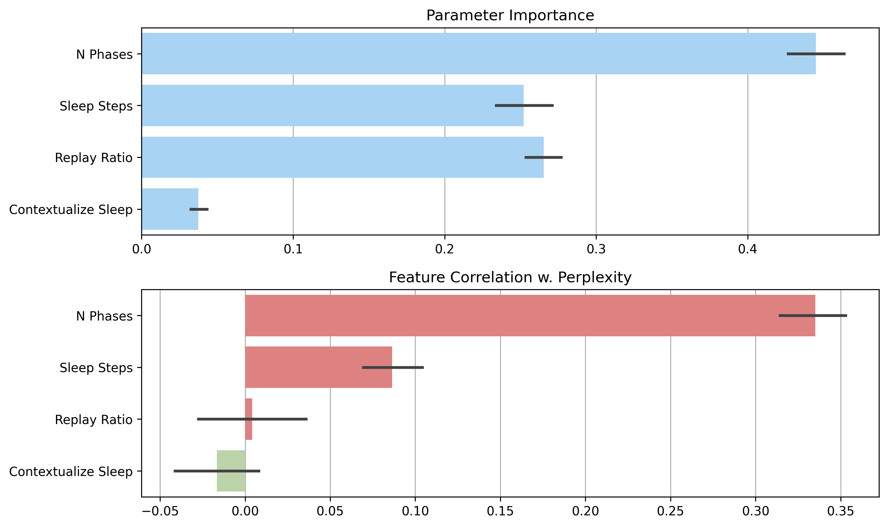
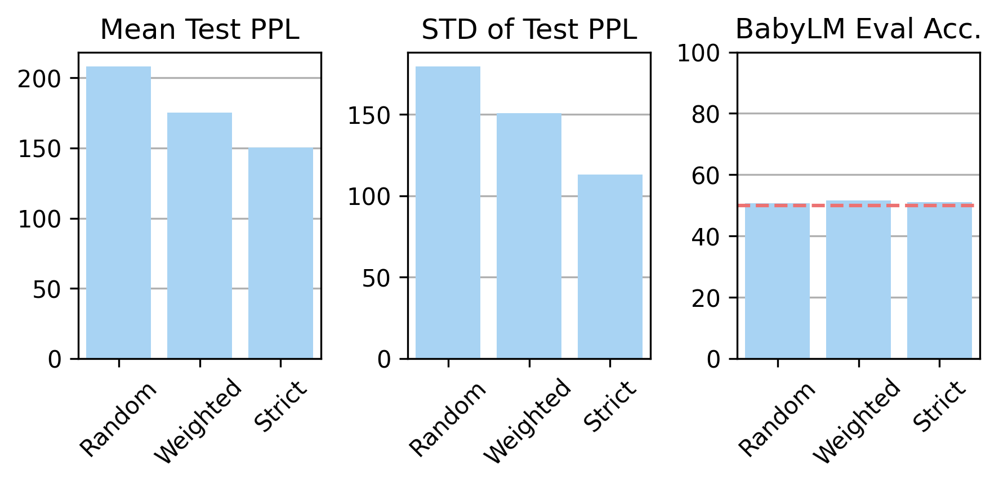
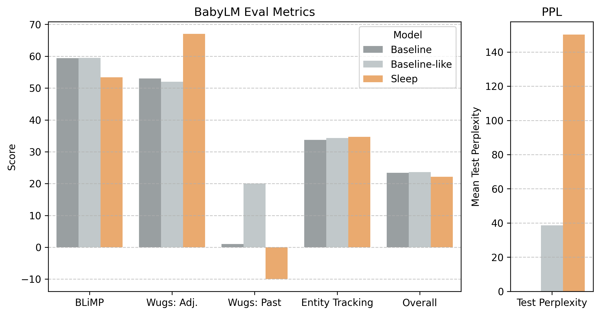
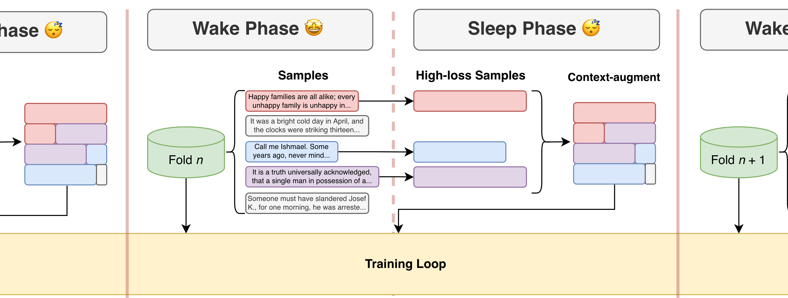

01 - Abstract
Abstract
Humans don't relive the same day ten times. Why should language models?
Training modern language models is expensive and repetitive. Models
read the same data over and over, sometimes dozens of times, to
learn effectively. This is nothing like how humans learn.
However, when humans sleep, the brain does revisit difficult
experiences, not only storing them but processing them more
thoroughly until they stick. We designed a training pipeline that
works the same way: rather than repeatedly looping over all the
data, the model works through it in chunks, and between each chunk,
it "sleeps" by replaying and reprocessing the samples it struggled
with most, giving difficult material extra attention before moving
on.
While results are mixed and our models still generally underperform
baselines, they show promise for sleep-inspired language modeling
and reveal the need for further analysis.
02 - Introduction
Introduction

Training a language model requires a lot of data. Models like
RoBERTa were trained on 30 billion words, and more recent models
like Llama 2 on trillions. A 12-year-old human, by comparison, is
exposed to fewer than 100 million in linguistic input.
This might be because, currently, language models don't learn like humans. Standard training exposes the model to the same dataset tens to thousands of times in forward passes called epochs. Models will see every data point in every epoch, even if they are unhelpful for its learning. Humans, by contrast, do not need to relive every experience since birth to learn. These differences and high training costs make it hard for researchers to use LLMs as cognitive models for language learning.
Humans do, however, revisit important memories during sleep. Neuroscientists have established that sleep is an active process of memory consolidation, thought to be central to how humans acquire complex cognitive skills, including language, from comparatively limited input.
We believe this principle is worth importing into language modeling. Prior sleep-inspired work has focused mainly on using replay to preserve old knowledge during new tasks. Instead, we ask whether sleep-like consolidation can improve sample efficiency during pretraining itself: what happens if a language model is trained the way humans learn, processing each sample only once but pausing between data blocks to consolidate what was hardest? Answering this question could help lower the costs of pretraining and improve effectiveness of language models for computational linguists.
Project Scope. We build and test a novel pretraining strategy for large language models, evaluating on both next-token prediction (perplexity) and more complex linguistic tasks, with hyperparameter sweeps and experiments. We do not attempt to build usable chatbots; this research is targets more data-efficient, cognitively-plausible models for computational linguistics.
Repository/Contributions. Our codebase is forked from the CLIMB repository by Diehl Martinez et. al. We reuse their data preprocessing and model loading scripts. Our contributions include the loss-weighted replay buffer, the wake-sleep training schedule (the sleep mechanism), and the associated experiment configs. Details are in our project repository.
03 - Results
Results
Hyperparameter Sweeps

Figure 1 shows the importance of each part of the sleep process for minimizing loss and the correlation of each parameter with perplexity loss. We find that the more sleep phases and the longer the sleep phases, the higher the loss. This could be because more sleep phases means smaller portions of the dataset within each cycle. What we are seeing then is hastened overfitting and subsequent forgetting.
Replay ratio is not significantly correlated, which is also surprising! While it shows close to zero correlation, it also has high importance. This indicates that replay ratio has a more complex relationship with model performance, potentially due to interactions with other parameters.
Contextualization is also of low/close to zero correlation. This parameter governs whether or not samples in the replay buffer are shuffled and recontextualized, which has been shown to improve model generalization. However, in our case, it seems to have a more complex effect.
Replay Experiments

Figure 2 displays the evaluation results from the replay strategy experiments. For both mean and standard deviation of test perplexity, strict replay yields the best results, and some weighting by loss is better than uniformly randomly sampling.
In addition to perplexity, we also evaluate our models on various linguistic tasks, explored further in section 04. Looking at the accuracy on linguistic tasks, all three strategies seem to be relatively similar. Additionally, accuracies seem to be at random, or close to 50% for all replay strategies, indicating that replaying more difficult data does not improve linguistic understanding.
Linguistic Evaluation/Baseline Comparison

Figure 3 shows both BabyLM evaluation accuracy and perplexity for the two baseline models and a sleep model. Both baseline models show similar performance, meaning our hyperparameter configuration successfully mimics multi-epoch training. Interestingly, performance is mixed across different linguistic tasks. This shows the effect of the replay buffer. The sleep model is learning the linguistic phenomena that commonly appear in the buffer, but not the others.
04 - Methods
Methods

Dataset. We train on the BabyLM 100M word corpus, a benchmark designed to approximate the linguistic input a child receives by age 13 (Warstadt, A., et al. (2023)). The corpus blends two domains: transcribed speech (56%) and child-directed written language (44%). This composition reflects how children encounter language: predominantly through spoken interaction, supplemented by reading. We further split this dataset into train and validation sets.
Model. We use a small RoBERTa-PreLayerNorm model with 8 hidden layers, 8 attention heads, a hidden size of 256, and an intermediate size of 2048 (Liu, Y., et al. (2019)). The compact scale allows us to run thorough hyperparameter sweeps under a realistic compute budget while still capturing meaningful training dynamics.
Sleep-Consolidated Training. The core of our approach replaces the standard multi-epoch training loop with a sequence of alternating wake and sleep phases (see Figure 4), repeated for a fixed number of cycles. The full dataset is partitioned into equally-sized folds, one per cycle.
During a wake phase, the model processes a single fold exactly once, training on the masked language modeling objective. As it trains, we record the cross-entropy loss for every sample. No sample is revisited within the wake phase.
At the end of each wake phase, we populate a replay buffer by sampling from the processed data using loss-weighted random selection: samples that the model struggled with more are more likely to be retained. The proportion of data retained is controlled by the replay ratio.
During the sleep phase, the model stops receiving new data and trains exclusively on the replay buffer. Before training begins, the buffered samples are shuffled and recombined into contiguous token blocks, then re-split at artificial boundaries rather than original sample boundaries. This context-augmented padding, adapted from prior work on contextualizer pretraining, prevents the model from memorizing surface patterns and encourages more abstract generalization. The sleep phase runs until a target loss threshold is reached or a maximum step count is exceeded, at which point the replay buffer is emptied.
After each sleep phase, the data from that wake cycle is discarded. Each sample in the full dataset is seen at most once during training.
Replay Strategy Studies. During the sleep phase, high-loss clips are selected for replay. To test the effect of the selection, we test three selection strategies:
- Random Replay: Clips from the wake phase are selected uniformly at random for the buffer.
- Weighted Replay: Clips are selected at random, but higher loss clips are more likely to be selected.
- Strict Replay: Only the highest loss clips are selected.
Evaluation. We compare against a multi-epoch baseline matched by total training steps rather than epochs, ensuring a fair, compute-controlled comparison. Beyond training perplexity, we evaluate on the Benchmark of Linguistic Minimal Pairs (BLiMP) to probe grammatical acceptability and syntactic knowledge, and on selected derivational morphology and entity-tracking tasks for semantic generalization (Warstadt et. al., 2020; Hofmann et. al., 2025; Weissweller et. al., 2023; Kim & Schuster, 2020). We also track sleep-specific metrics: the standard deviation and maximum of per-sample perplexity within batches, to examine whether sleep phases are successfully narrowing the gap between easy and hard data points over time.
05 - Conclusion
Conclusion
Overall, it is clear that sleep models currently fall short of standard multi-epoch models, both in terms of next-token prediction and linguistic understanding. However, our results still indicate that this new, cognitively-plausible training paradigm has promise.
Firstly, in our hyperparameter sweep, several results were counter-intuitive, showing a divergence from multi-epoch training. Of particular interest is the replay ratio, as our results from the replay strategy experiments show that training a language model on a smaller proportion of the highest-loss clips leads to improved performance. This supports our hypothesis that in a multi-epoch training schedule, steps are wasted by training over easier samples.
Additionally, in terms of linguistic understanding, results are inconclusive. While sleep-like training improved performance on some tasks, multi-epoch models fared better on others. This may have to do with the model overfitting on particular linguistic phenomena commonly found in the replay buffer. More analysis of which samples are chosen for replay is needed.
We have several hypotheses as to why performance of sleep models falls so short of baselines. For one, the model could be overwriting information learned in past folds with new data from a later fold. This would lead to catastrophic forgetting, causing the model to become worse at generalizing to unseen data and explaining the high test perplexities.
Another explanation could be in the selection of samples for the replay buffer. It's possible that the highest-loss samples contain random noise from the dataset that hinders learning rather than helps it.
Next Steps. In the future, to address the issue of overfitting and forgetting, we could take inspiration from another process that happens during sleep as a part of memory consolidation: synaptic homeostasis. During waking hours, synapses are constantly strengthening and firing strongly, making it easier to learn and encode new information. However, this comes with a high resource cost; stronger synaptic connections need more energy and place extra stress on neurons (Tononi & Cirelli, 2014). Additionally, neurons with stronger synaptic connections may fire for random chance, effectively wasting resources (Balduzzi & Tononi, 2013). Thus, during sleep, important synapses with strong signals are strengthened and consolidated, while less important connections are reduced or even pruned (Tononi & Cirelli, 2014). We will attempt to implement such a mechanism into the sleep mechanism by freezing weights in the model and manipulating learning rates. This would simulate reduced plasticity and serve to "lock in" information learned in earlier folds of the dataset. Future studies could also explore more nuanced ways to measure how helpful a sample would be for learning, improving upon the selection process for the replay buffer to prevent overfitting to noise.
Multi-epoch learning, while effective for LM training, is not cognitively-plausible or comparable to human learning. While our project has so far been unsuccessful in providing a cognitively-plausible, sleep-inspired alternative, it has produced promising results. We hope that in continuing this project, we may develop such an alternative and forward the democratization of linguistic research.
06 - References
References
- Hart, B., & Risley, T. R. (1992). American parenting of language-learning children: Persisting differences in family-child interactions observed in natural home environments. Developmental Psychology, 28(6), 1096–1105.
- Warstadt, A., & Bowman, S. R. (2024). What artificial neural networks can tell us about human language acquisition. arXiv:2208.07998.
- Grattafiori, A., et al. (2024). The Llama 3 herd of models. arXiv:2407.21783.
- Rasch, B., & Born, J. (2013). About sleep's role in memory. Physiological Reviews, 93(2), 681–766.
- Marr, D. (1971). Simple memory: a theory for archicortex. Philosophical Transactions of the Royal Society of London B, 262(841), 23–81.
- Tononi, G., & Cirelli, C. (2014). Sleep and the price of plasticity: From synaptic and cellular homeostasis to memory consolidation and integration. Neuron, 81(1), 12–34.
- Balduzzi, D., & Tononi, G. (2013). What can neurons do for their brain? Communicate selectivity with bursts. Theory in Biosciences, 132(1), 27–39.
- Xiao, C., Hudson, G. T., & Al Moubayed, N. (2023). Towards more human-like language models based on contextualizer pretraining strategy. In Proceedings of the BabyLM Challenge at CoNLL 2023, 317–326.
- Liu, Y., et al. (2019). RoBERTa: A robustly optimized BERT pretraining approach. arXiv:1907.11692.
- Diehl Martinez, R., et al. (2023). CLIMB – Curriculum Learning for Infant-inspired Model Building. Proceedings of the BabyLM Challenge at the 27th Conference on Computational Natural Language Learning, 112-127.
- Warstadt, A., et al. (2023). Findings of the BabyLM Challenge: Sample-efficient pretraining on developmentally plausible corpora. In Proceedings of the BabyLM Challenge at CoNLL 2023, 1–6.
- Tadros, T., Krishnan, G. P., Ramyaa, R., & Bazhenov, M. (2022). Sleep-like unsupervised replay reduces catastrophic forgetting in artificial neural networks. Nature Communications, 13, 7742.
- Oudiette, D., & Paller, K. A. (2013). Upgrading the sleeping brain with targeted memory reactivation. Trends in Cognitive Sciences, 17(3), 142–149.
- Hu, M. Y., et al. (2024). Findings of the second BabyLM Challenge: Sample-efficient pretraining on developmentally plausible corpora. arXiv:2412.05149.